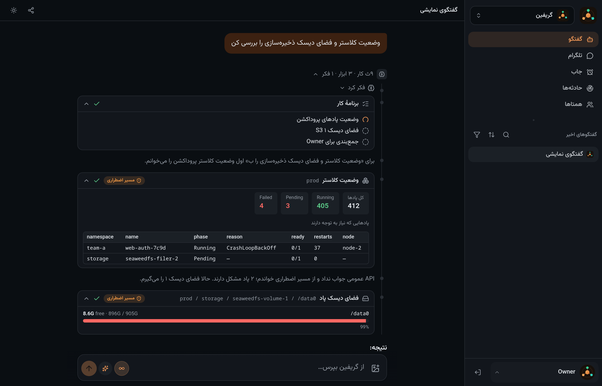

Griffin — a self-hosted multi-agent AI assistant
Griffin is an open-source shell for a small team of AI agents that work for you. You decide what each agent is, which typed tools it may use and who may call it — and the agents answer from those tools instead of from the model's memory. It runs on your own box, on Claude, Cursor or any OpenAI-compatible model.

What Griffin does
Agents you define
Agents are rows in a table, not code: instructions, model, tools and callers. Create one from the UI, the API or a JSON profile.
Per-caller tool quotas
The owner, another agent, a scheduled job, a colleague or an external MCP client each get exactly the tools you grant — enforced in code, not in the prompt.
Delegation
An orchestrator agent plans, delegates to specialist sub-agents without blocking, and reports back when subtasks land.
Any model
Claude Agent SDK, Cursor SDK, or any OpenAI-compatible endpoint, chosen per agent and per chat, with automatic fallback when a plan limit is hit.
Infrastructure tools
Kubernetes, Prometheus, Grafana, PostgreSQL, S3, GitLab, MikroTik, CDN and DNS/HTTP/TLS probes — behind a broker that holds every credential.
Works during the outage
Cluster tools try the public API first and fall back to emergency SSH, so the assistant stays useful when the thing it watches is down.
MCP, Telegram, terminal
An MCP endpoint for Claude Code and other agents, Telegram and Bale bots, a CLI, a Bearer API — or run headless.
Charts, files, jobs
Vega-Lite charts from real rows, inline media, and scheduled jobs that deliver to the chat you already use.
Guarded writes
Irreversible actions wait for the owner's approval; unattended chains refuse them. Every approval is audited.
Run it in two minutes
git clone https://github.com/paziresh24/Griffin.git griffin && cd griffin
npm ci && npm run build
mkdir -p data workspace
echo "sk-ant-…" > data/anthropic.api-key && chmod 600 data/anthropic.api-key
GRIFFIN_DATA=./data GRIFFIN_WORKSPACE=./workspace PORT=3100 node apps/server/src/index.mjsOr with Docker: docker compose -f deploy/compose.yaml up -d --build. No cluster, vault or YAML is
needed to start; infrastructure tools appear only once you configure them.
Documentation
- Agents — profiles, tools, callers and quotas
- Interfaces — web, terminal, HTTP API, MCP, messengers
- Architecture — the app/broker split and the security posture
- Configuration — environment, site inventory, vault items